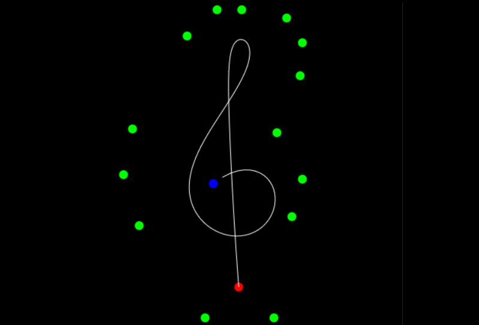
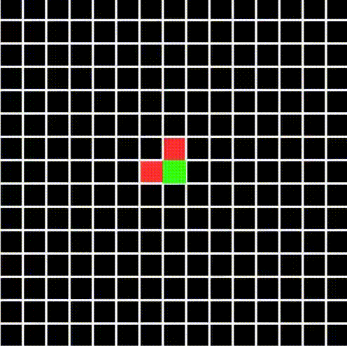
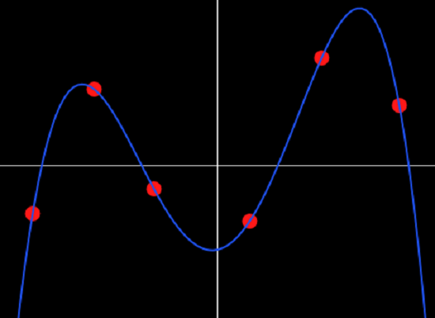
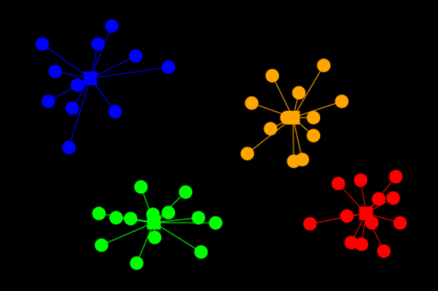
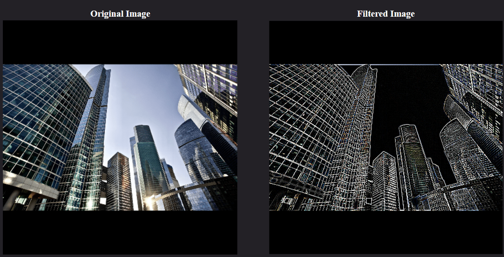
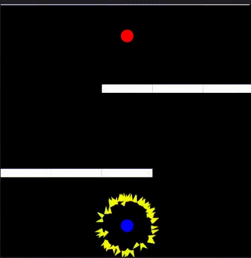
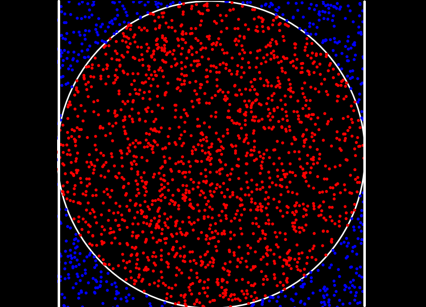
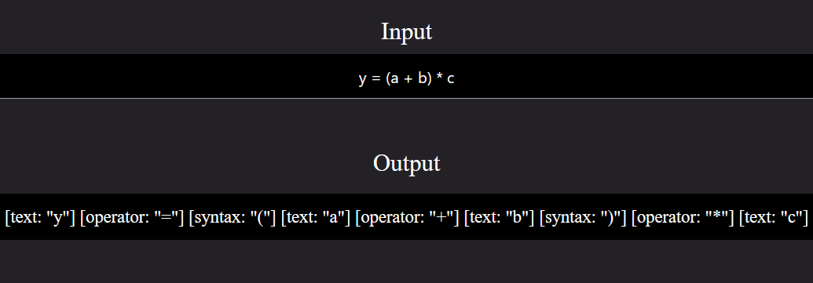

Developed by ChanRT | Fork me at GitHub
Computer Science
Sorting Algorithms

View the working of 7 sorting algorithms, step by step, alongside some juicy info! This simulation also shows you operational parameters like number of array accesses and comparisons.
Bezier Curves

Computers use Bezier curve to render all text based elements. Further, they are widely used in designing and computer graphics. Design your own curves using this simulation! Use as many control points as you wish!
Maze Generation

Ever wondered how maze generation algorithms work? This simulation encompasses three maze generation algorithms (as of now). Also found brief description of the step-by-step working of these algorithm, along with their pros and cons.
Polynomial Regression

Polynomial Regression is the process of fitting a bunch of points to a polynomial of a given order. It forms the basis for several Machine Learning algorithms. This simulation allows you to define your own points and find the best fit using the polynomial of the given degree.
Clustering

Travelling Salesman
A salesman wants to cover all places of interest through the shortest path possible and without visiting the same place twice. What path should he follow? This deceptively simple looking problem becomes extremely diffucult to solve as the number of places increases!
Image Filters

Simple matrix operations on RGB values of an image can transform various aspects of the image or yield useful information. this interactive visualization allows you to apply your own kernels to a collection of image. Also find some popularly used kernels.
Evolutionary Algorithm

View the process behind the diversity of lifeforms we see today! This simulation utilizes an Evolutionary Algorithm to select the boid with the best genes. Change the positions of the source, target and the obstacles to build your own custom worlds!
Monte Carlo Simulation

Gain the intution behind Monte Carlo simulations by using it to quickly estimate the value of pi using nothing except random numbers!
Lexical Analysis
